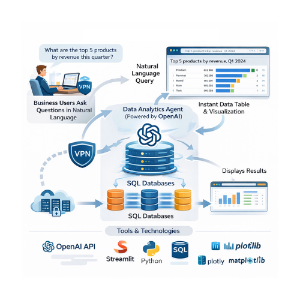

Telecom provider · Sr Data Scientist · 2026
Data Analyst Agent
Business users should be able to run complex analyses by asking a question, without writing SQL, and get both a table and a chart back instantly.
NL → SQL
questions turned into SQL
Validated
every query checked against the schema
Table + chart
returned for each question
Company-wide
available via VPN
01Demo
02Problem
Analyses depended on people who write SQL. The goal: let business users ask questions in natural language and receive tabular and visual results instantly.
03Data
- Direct connection to company databases (transactional, CRM, financial)
- Metadata such as field names, data types and relationships across tables and schemas
04Approach
- QuestionThe user asks in plain language.
- InterpretAn OpenAI model reads the question with the schema metadata.
- Generate SQLThe agent writes the query.
- ValidateThe SQL is checked against the database schema before running.
- AnswerResults come back as a data table and an interactive chart in Streamlit.
05Deployment
Runs on a virtual machine and is available to the whole company through the VPN.
06Visuals
